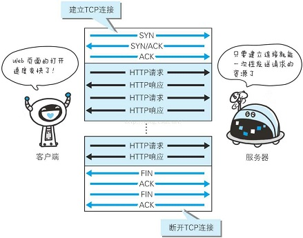
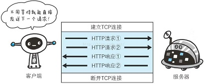

持久连接
HTTP 协议的初始版本中，每进行一次 HTTP 通信就要断开一次 TCP 连接。因此，每次的请求都会造成无谓的 TCP 连接建立和断开，增加通信量的开销。
因此，HTTP/1.1 和一部分的 HTTP/1.0 想出了持久连接（HTTP Persistent Connections，也称为 HTTP keep-alive 或 HTTP connectionreuse）的方法。持久连接的特点是，只要任意一端没有明确提出断开连接，则保持TCP 连接状态。

管线化
持久连接使得多数请求以管线化（pipelining）方式发送成为可能。
从前发送请求后需等待并收到响应，才能发送下一个请求。管线化技术出现后，不用等待响应亦可直接发送下一个请求。 这样就能够做到同时并行发送多个请求，而不需要一个接一个地等待响应了
